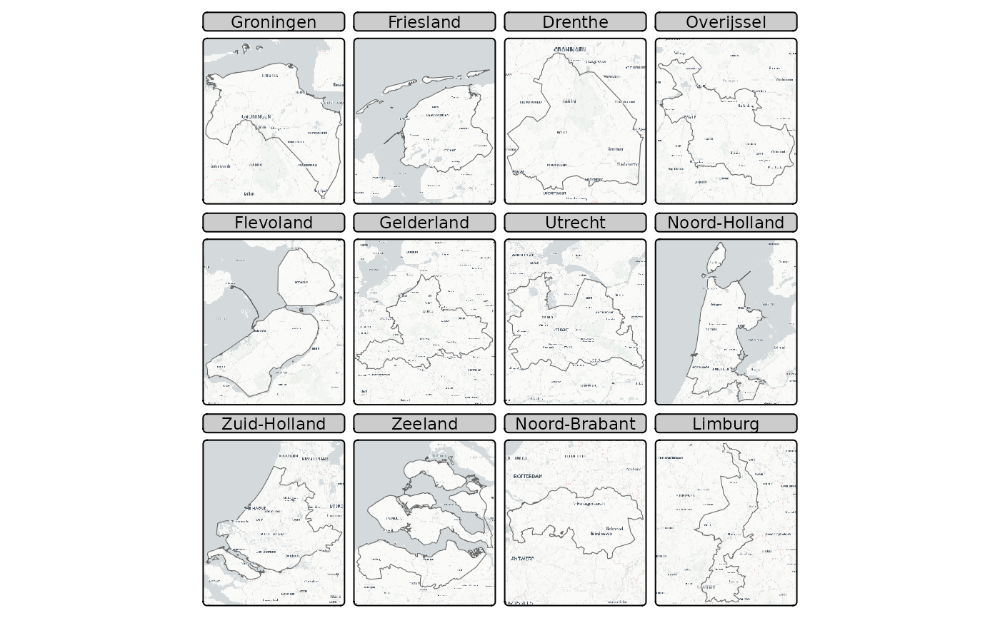

Map layer that draws tiles from a tile server. tm_basemap() draws the tile
layer as basemap, i.e. as bottom layer. In contrast, tm_tiles() draws the
tile layer as overlay layer, where the stacking order corresponds with the
order in which this layer is called, just like other map layers.
Usage
tm_basemap(
server = NULL,
alpha = NULL,
zoom = NULL,
zindex = 0,
group = NA,
group.control = "radio"
)
tm_tiles(
server = NULL,
alpha = NULL,
zoom = NULL,
zindex = NA,
group = NA,
group.control = "check"
)Arguments
- server
Name of the provider or an URL. The list of available providers can be obtained with
providers(tip: in RStudio, typeproviders$to see the options). See https://leaflet-extras.github.io/leaflet-providers/preview/ for a preview of those. When a URL is provided, it should be in template format, e.g."https://{s}.tile.openstreetmap.org/{z}/{x}/{y}.png". UseNULLintm_basemap()to disable basemaps.- alpha
Transparency level
- zoom
Zoom level (only used in plot mode)
- zindex
zindex of the pane in view mode. By default, it is set to the layer number plus 400. By default, the tmap layers will therefore be placed in the custom panes
"tmap401","tmap402", etc., except for the base tile layers, which are placed in the standard"tile". This parameter determines both the name of the pane and the z-index, which determines the pane order from bottom to top. For instance, ifzindexis set to 500, the pane will be named"tmap500".- group
Name of the group to which this layer belongs. This is only relevant in view mode, where layer groups can be switched (see
group.control)- group.control
In view mode, the group control determines how layer groups can be switched on and off. Options:
"radio"for radio buttons (meaning only one group can be shown),"check"for check boxes (so multiple groups can be shown), and"none"for no control (the group cannot be (de)selected).
Examples
if (requireNamespace("maptiles")) {
tm_basemap() +
tm_shape(World) +
tm_polygons("HPI")
tm_basemap("OpenTopoMap") +
tm_shape(World) +
tm_polygons(fill = NA, col = "black")
}
#> Loading required namespace: maptiles
